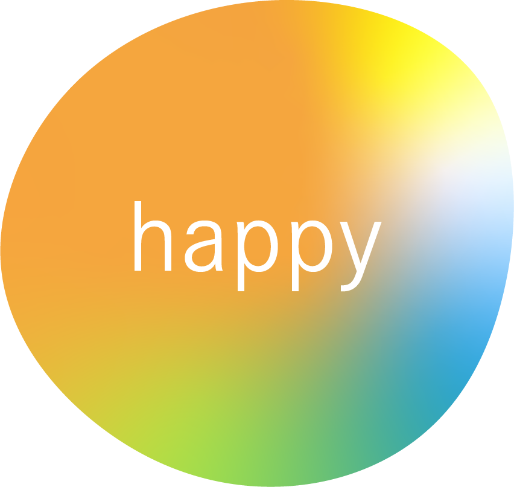
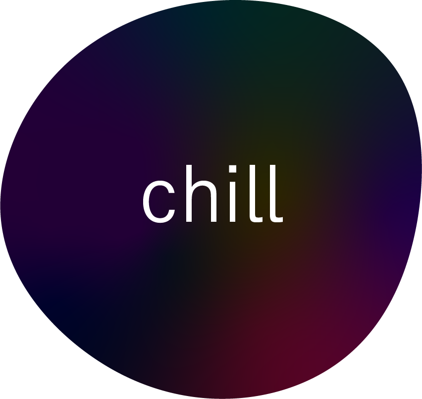

Loading....
いまの気分は？


Loading....
いまの気分は？
Loading....
あなたと一緒に、
あなたらしさに
彩りを。
Web design &
Cording
GOTO DESIGN
あなたの
「おもしろい」
「たのしい」
は何ですか？
ヒアリングに基づいたプランに沿って、デザインを作成いたします。人の使うものであることを常に意識して、使う人が迷わない、目的を達成できるデザインを心がけています。
［ 使用ツール ］
Adobe Illustrator
AdobePhotoshop
デザインの意図を理解し、動きや効果を適切に使用することでWebサイトの仕上がりは大きく変わります。Javascriptを使用した動きのあるサイトなど、様々なサイトのコーディングを行っております。
［ 使用ツール ］
HTML / CSS / jQuery
Github / VSCode
1

ハンバーガーショップ
バナーデザイン
#Banner design
2

スマホ
バナーデザイン
#Banner design
3

美容院サイト
webデザイン
#Web design
いっしょに「おもしろいもの」作りませんか